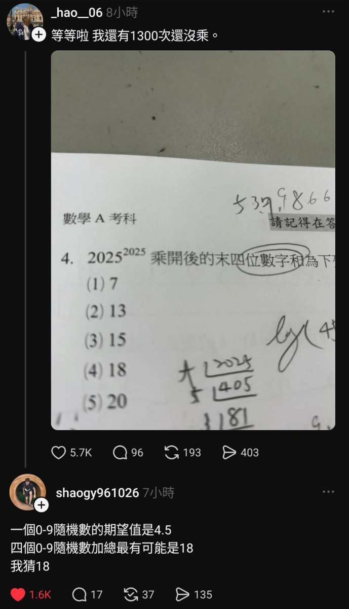

奶昔🥤
@realNyarime
@hsn8086 2025可以拆成2000和25分别2025次，且2000*2025=4050000不会影响后四位。而且25*25还是625，不管怎样后三位都是625，6+2+5=13。剩下三个选项。既然上面已经说过不会影响后四位，那可以看成25乘2025次：两次625，三次15625，四次390625，五次9765625。那么基数就是5625。即5+6+2+5=18

hsn
@hsn8086
真要算出来的话, 快速幂秒了吧, 11 + (8-1)次运算算完了 https://t.co/DuIqaw5fsx